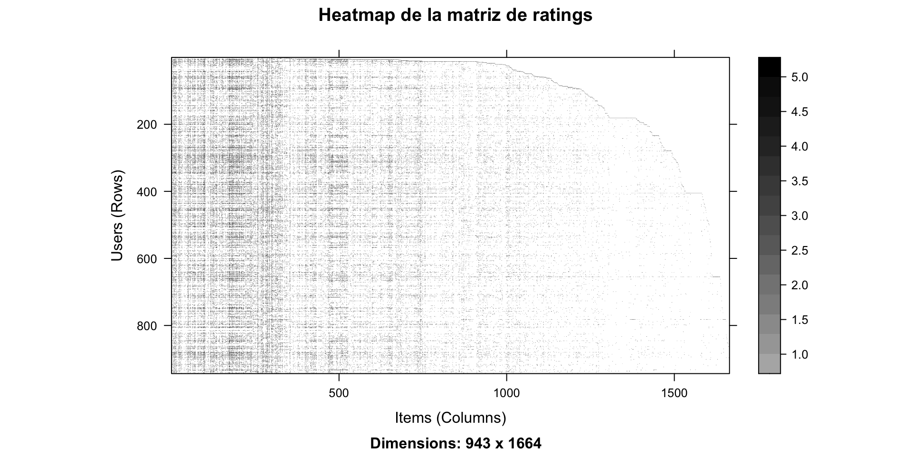
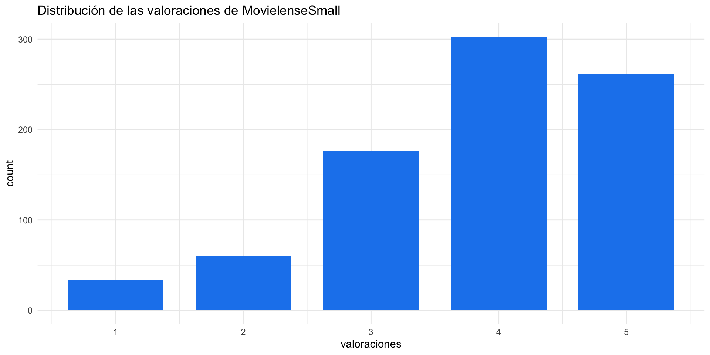
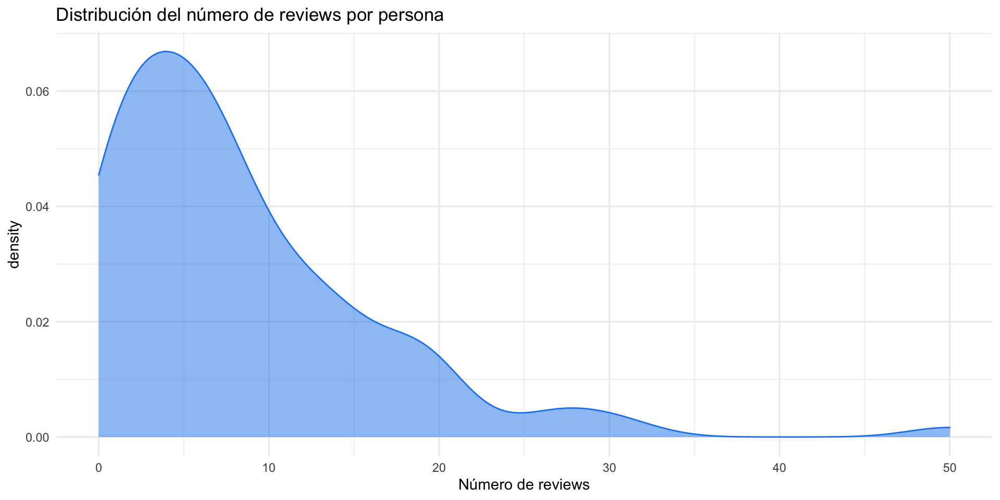
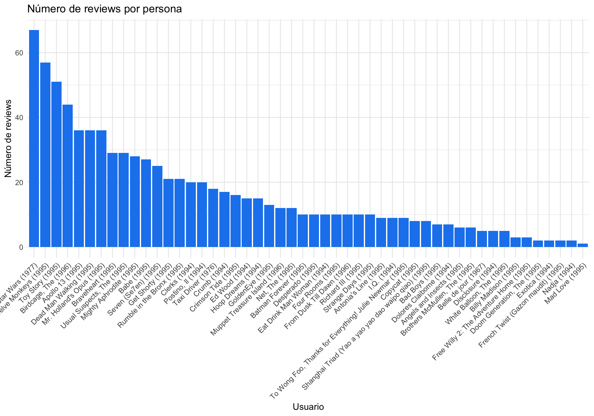
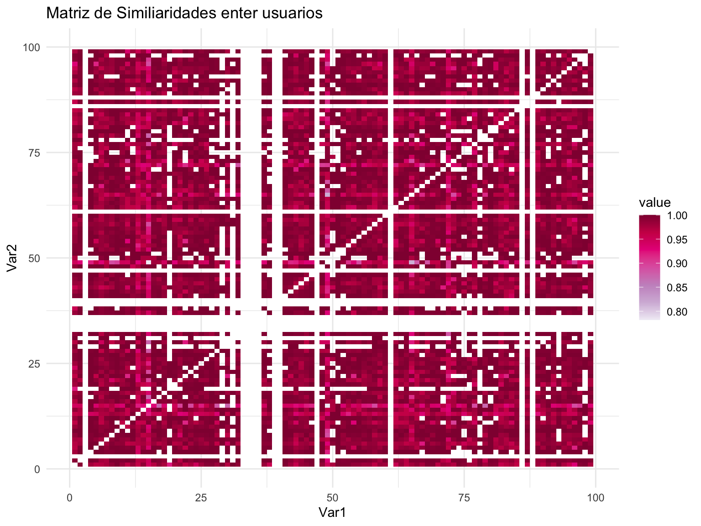
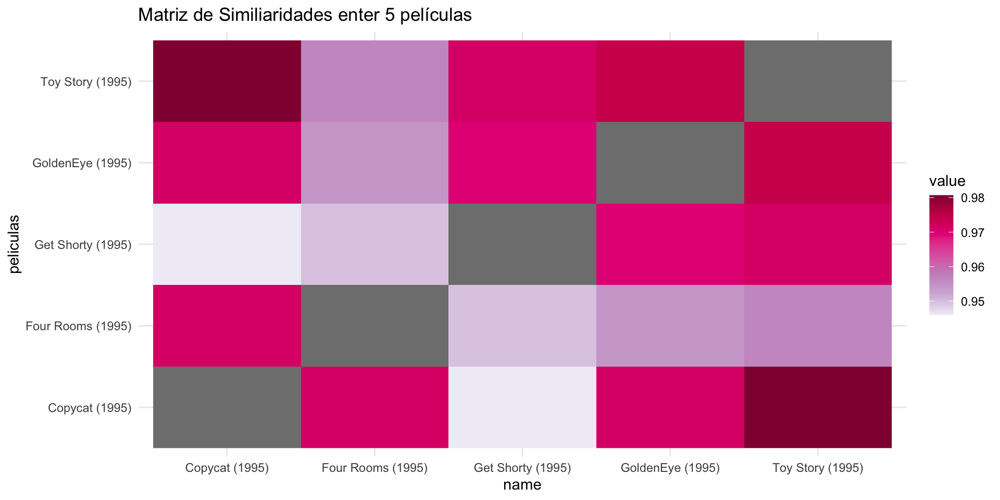
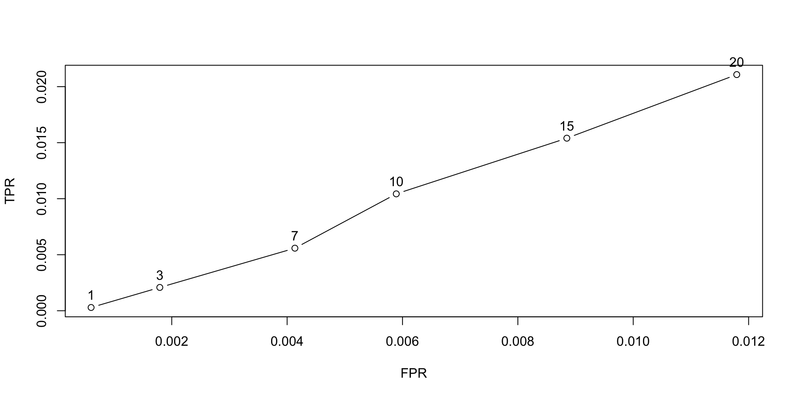
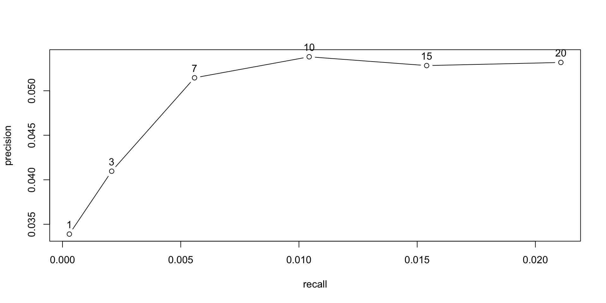
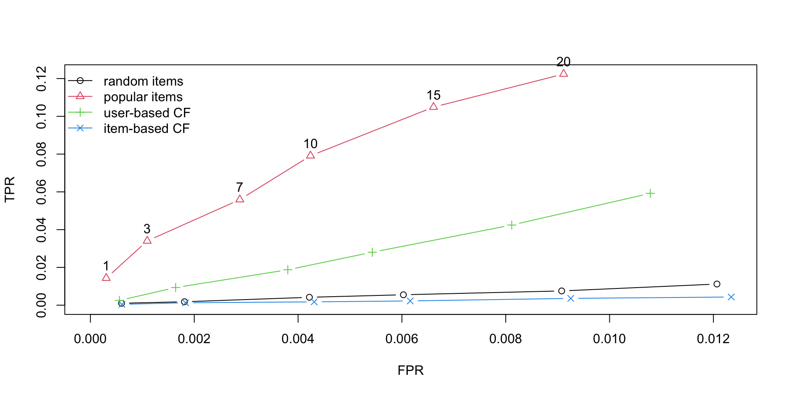

Parte 2. {recommenderlab}
Paula López Casado - 21-12-2022
En esta sessión veremos…
- Cómo instalar {recommenderlab}
- Exploración de matrices de valoraciones
- Visualización de matrices de similaridad
- Ejemplos de con diferentes algoritmos de recomendación
{recommenderlab} – la librería de R
Funciones de clase S4
Se basa en el filtro colaborativo
La librería consta de 3 funciones principales, entre otras.
RecommenderpredictevaluationScheme
Instalación
- Versión de CRAN desde R:
- Version en desarrollo:
Podemos abrir la ayuda del paquete para obtener más informacioo4ón sobre las funciones disponibles.
Y los datos disponibles:
Ejemplo 1. MovieLense.
Datos
En primer lugar, cargamos los datos y los preparamos para utilizar el paquete {recommenderlab}. Utilizaremos el dataset MovieLense incluido en la propia librería.
Los datos de MovieLense contienen las valoraciones de películas de 1 a 5. Para este primer ejemplo tomaremos tan solo 100 usuarios y 50 películas.
943 x 1664 rating matrix of class 'realRatingMatrix' with 99392 ratings.Visualizar la matriz de ratings
getRatings
Con la función
getRatingsvemos los valores de calificación no ausentes de la matrizCon la función
getRatingMatrixvemos todos valores de calificación no ausentes de la matriz
¿Cuál es la valoración más común?
A continuación, visualizamos la distribución de valoraciones con la librería ggplot2.
Para extraer las valoraciones de la matriz de ratings, utilizamos de nuevo getRatings.
¿Cuál es la valoración más común?

¿Cuántas películas valora cada usuario?
Para conocer cuántas películas valora cada usuario realizamos un diagrama de densidad del número de reviews que realiza cada usuario.
data.frame(reviews_por_persona =
rowCounts(MovieLenseSmall)) -> df_reviews_usuario
ggplot(df_reviews_usuario) +
geom_density(aes(x = reviews_por_persona),
fill = "dodgerblue2", color = "dodgerblue2", alpha = 0.5) +
labs(title = 'Distribución del número de reviews por persona',
x ="Número de reviews")¿Cuántas películas valora cada usuario?

¿Cuántas valoraciones tiene cada película?
Para conocer cuántas valoraciones tiene cdaa película, aplicamos la función colCounts sobre la matriz de valoraciones.
data.frame(reviews_por_pelicula = colCounts(MovieLenseSmall)) ->
df_reviews_pelicula
ggplot(df_reviews_pelicula) +
geom_col(aes(x = reorder(row.names(df_reviews_pelicula), -reviews_por_pelicula),
y = reviews_por_pelicula),
fill = "dodgerblue2") +
theme(axis.text.x = element_text(angle = 45, hjust = 1)) +
labs(title = 'Número de reviews por persona',
x = "Usuario", y = "Número de reviews")¿Cuántas valoraciones tiene cada película?

Ejercicios
Ejercicio 1. Calcula el porcentaje de usuarios que valoran, como máximo, 20 películas.
Ejercicio 2. Encuentra la película más valorada y la mejor valorada (de media).
Puedes calcular la media por fila con rowMeans y la media por columna con colMeans.
Visualizar la similaridad entre usuarios
Visualizar la similaridad entre usuarios

Visualizar la similaridad entre ítems
as.matrix(
similarity(MovieLense[,1:5],
method = "cosine", # cosine, pearson, o jaccard
which = "items")
) -> m_items
m_items |>
as.data.frame() |>
rownames_to_column("peliculas") |>
pivot_longer(-c(peliculas)) |>
ggplot(aes(x=name, y=peliculas, fill=value)) +
geom_raster() +
scale_fill_distiller(palette = "PuRd", direction = 1) +
labs(title = "Matriz de Similiaridades enter 5 películas")Visualizar la similaridad entre ítems

Ejemplo básico
Como primer ejemplo podemos dividir manualmente el conjunto de datos en entrenamiento y test, aplicar un modelo de recomendación, con los parámetros por defecto del modelo, y predecir una lista de películas.
1) Dividir en dataset en entrenamiento y test
Dado que contamos con 100 usuarios, tomaremos los 75 primeros para entrenar, y los 25 restantes para testear.
2) Aplicar un algoritmo de recomendación
- Los algoritmos de recomendación se almacenan en un objeto de registro llamado
recommenderRegistry
- Aplicaremos el recomendador basado en el filtrado colaborativo de usuarios, UBCF con los parámetros por defecto del modelo.
3) Generar nuevas recomendaciones
Vamos a crear recomendaciones para el usuario 76 (no visto por el algoritmo anteriormente)
Para crear nuevas recomendaciones utilizamos la función
predicta la que pasaremos el modelo previamente creado de clase Recommender y el usuario al cual queremos recomendar
| user | item | rating |
|---|---|---|
| 76 | Hoop Dreams (1994) | 4.401564 |
| 76 | Eat Drink Man Woman (1994) | 4.327858 |
| 76 | Star Wars (1977) | 4.284340 |
| 76 | French Twist (Gazon maudit) (1995) | 4.267342 |
| 76 | Dead Man Walking (1995) | 4.107345 |
| 76 | Angels and Insects (1995) | 4.086667 |
| 76 | Disclosure (1994) | 4.086667 |
| 76 | Exotica (1994) | 4.086667 |
| 76 | Braveheart (1995) | 4.072939 |
| 76 | Mr. Holland’s Opus (1995) | 4.060142 |
| 76 | Apollo 13 (1995) | 4.060021 |
| 76 | Postino, Il (1994) | 3.977975 |
| 76 | Antonia’s Line (1995) | 3.973700 |
| 76 | Dolores Claiborne (1994) | 3.970217 |
| 76 | Mighty Aphrodite (1995) | 3.963076 |
| 76 | Toy Story (1995) | 3.943202 |
| 76 | Desperado (1995) | 3.910056 |
| 76 | Belle de jour (1967) | 3.902709 |
| 76 | I.Q. (1994) | 3.819883 |
| 76 | Ed Wood (1994) | 3.738320 |
| 76 | Four Rooms (1995) | 3.701961 |
| 76 | Get Shorty (1995) | 3.631081 |
| 76 | Crimson Tide (1995) | 3.594167 |
| 76 | Crumb (1994) | 3.556890 |
| 76 | Babe (1995) | 3.554113 |
| 76 | Strange Days (1995) | 3.481789 |
| 76 | Brothers McMullen, The (1995) | 3.364756 |
| 76 | White Balloon, The (1995) | 3.302032 |
| 76 | GoldenEye (1995) | 3.273429 |
| 76 | Richard III (1995) | 3.188702 |
| 76 | Birdcage, The (1996) | 3.115318 |
| 76 | To Wong Foo, Thanks for Everything! Julie Newmar (1995) | 3.038237 |
| 76 | Bad Boys (1995) | 3.007599 |
| 76 | Seven (Se7en) (1995) | 2.927373 |
| 76 | From Dusk Till Dawn (1996) | 2.821857 |
| 76 | Net, The (1995) | 2.817318 |
| 76 | Batman Forever (1995) | 2.626085 |
| 76 | Copycat (1995) | 2.515713 |
| 76 | Muppet Treasure Island (1996) | 2.184374 |
| 76 | Doom Generation, The (1995) | 2.086667 |
| 76 | Mad Love (1995) | 2.086667 |
| 76 | Billy Madison (1995) | 2.086667 |
| 76 | Nadja (1994) | 1.737000 |
| 76 | Free Willy 2: The Adventure Home (1995) | 1.086667 |
Se pueden generar recomendaciones para varios usuarios al mismo tiempo, pero tengamos en cuenta que la función
predicttiene como límite 10 usuarios.También se puede obtener directamente un top-N de reocmendaciones en forma de lista, obviando las valoraciones estimadas.
Podríamos aplicar otro algoritmo de recomendación y compararlo.
Recommender of type 'POPULAR' for 'realRatingMatrix'
learned using 75 users.Ejemplo avanzado.
El ejemplo anterior nos ha servido como caso inicial como primera toma de contacto con la librería. Sin embargo, existen funciones más avanzadas que nos permitirán llegar a realizar un ejemplo más completo y evaluar el modelo de recomendación o comparar algoritmos de recomendación entre sí.
1) Generar un esquema de evaluación
set.seed(1)
evaluationScheme(MovieLense, # Conjunto de datos como `ratingMatrix`
method = 'split', # Método de splitting
train = 0.75, # Fracción de entrenamiento
given = 10,# Número único de elementos dados para la evaluación
goodRating = 4 # Umbral para dar calificaciones como buenas
) -> MovieLense_esquema
MovieLense_esquemaEvaluation scheme with 10 items given
Method: 'split' with 1 run(s).
Training set proportion: 0.750
Good ratings: >=4.000000
Data set: 943 x 1664 rating matrix of class 'realRatingMatrix' with 99392 ratings.2) Aplicar un algoritmo de recomendación
- Definir los parámetros del modelo
- Aplicar el modelo
Recommender(
getData(MovieLense_esquema, "train"), # Matriz de entrenamiento
method = "UBCF", # Método de recomendación
parameter = model_params # Parámetros del algoritmo de recomendación
) -> rec_UBCF_avanzado
rec_UBCF_avanzadoRecommender of type 'UBCF' for 'realRatingMatrix'
learned using 707 users.3) Generar nuevas recomendaciones
La función
predictpermite generar nuevas recomendaciones utilizando un modelo de recomendación y datos sobre nuevos usuariosDe entrada, se utiliza la parte de los datos de test conocida (oculta para el algoritmo)
predict(rec_UBCF_avanzado, # Modelo de recomendación de clase Recommender
getData(MovieLense_esquema, "known"), # Datos de usuarios test
type = "ratings" # Tipo de recomendación: topNList, ratings, ratingsMatrix
) -> pred_UBCF_avanzado
pred_UBCF_avanzado236 x 1664 rating matrix of class 'realRatingMatrix' with 153759 ratings.4) Evaluar la precisión de la predicción
La función
calcPredictionAccuracypermite evaluar el error de predicciónSe puede dar por usuario o en global
Para el cálculo de las métricas se utilizan las datos de test desconocidos
5) Evaluar el agoritmo para el top-N
La función
evaluatenos permite un algoritmo para diferentes top-N elementosGeneramos listas top-N de diferente número de recomendaciones, por ejemplo, 1, 3, 7, 10, 15, 20.
evaluate(MovieLense_esquema, method = "UBCF", type = "topNList",
n = c(1, 3, 7, 10, 15, 20)) -> eval_UBCFUBCF run fold/sample [model time/prediction time]
1 [0.003sec/0.706sec] [[1]]
TP FP FN TN N precision recall
[1,] 0.03389831 0.9661017 49.54661 1603.453 1654 0.03389831 0.000289396
[2,] 0.12288136 2.8771186 49.45763 1601.542 1654 0.04096045 0.002079180
[3,] 0.36016949 6.6398305 49.22034 1597.780 1654 0.05145278 0.005583783
[4,] 0.53813559 9.4618644 49.04237 1594.958 1654 0.05381356 0.010432299
[5,] 0.79237288 14.2076271 48.78814 1590.212 1654 0.05282486 0.015400873
[6,] 1.06355932 18.9364407 48.51695 1585.483 1654 0.05317797 0.021077997
TPR FPR n
[1,] 0.000289396 0.0006017372 1
[2,] 0.002079180 0.0017927193 3
[3,] 0.005583783 0.0041346359 7
[4,] 0.010432299 0.0058920890 10
[5,] 0.015400873 0.0088487832 15
[6,] 0.021077997 0.0117942723 20

6) Comparación de algoritmos
En los sistemas de recomendación es necesario a veces probar con diferentes modelos y elegir el de mejor resultado
La función
evaluatetambién nos permite evaluar varios algoritmos al mismo tiempo
algoritmos <- list(
`random items` = list(name = "RANDOM", param = NULL),
`popular items` = list(name = "POPULAR", param = NULL),
`user-based CF` = list(name = "UBCF", param = list(nn = 3)),
`item-based CF` = list(name = "IBCF", param = list(k = 100)))
evaluate(MovieLense_esquema, algoritmos, type = "topNList",
n = c(1, 3, 7, 10, 15, 20)) -> eval_variosRANDOM run fold/sample [model time/prediction time]
1 [0.001sec/0.082sec]
POPULAR run fold/sample [model time/prediction time]
1 [0.004sec/0.35sec]
UBCF run fold/sample [model time/prediction time]
1 [0.003sec/0.616sec]
IBCF run fold/sample [model time/prediction time]
1 [1.72sec/0.035sec] 
Conclusiones
- El peor modelo es el aleatorio, seguido por el filtro colaborativo basado en ítems.
- El mejor modelo es el popular, distando en mayor medida del siguiente mejor modelo, UBCF
- Para listas top-1, el IBCF es ligeramente mejor que UBCF
- Para lista top-n, con \(n>1\), UBCF funciona mejor que IBCF
Ejercicios
Ejercicio 3. Aplica sobre el conjunto de datos MovieLense el algoritmo IBCF y compara el resultado con el UBCF. Compara ambos modelos a través de las métricas de evaluación vistas. Por ejemplo, utiliza la curva ROC para comparalos.
Bibliografía
https://elartedeldato.com